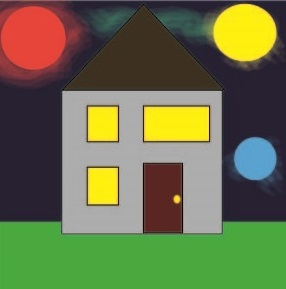
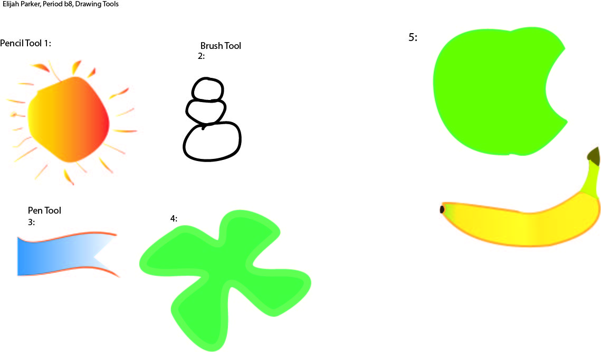
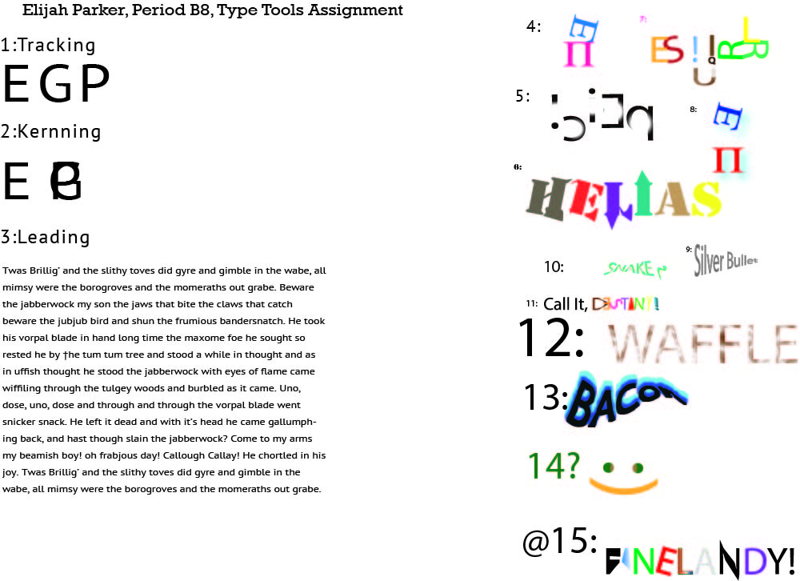
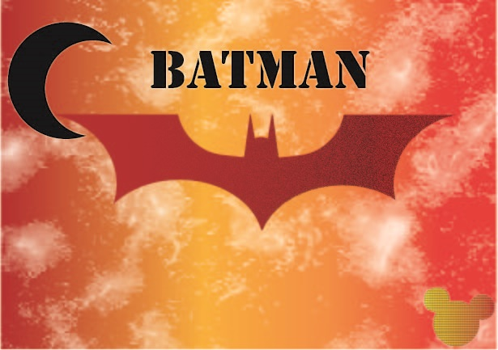
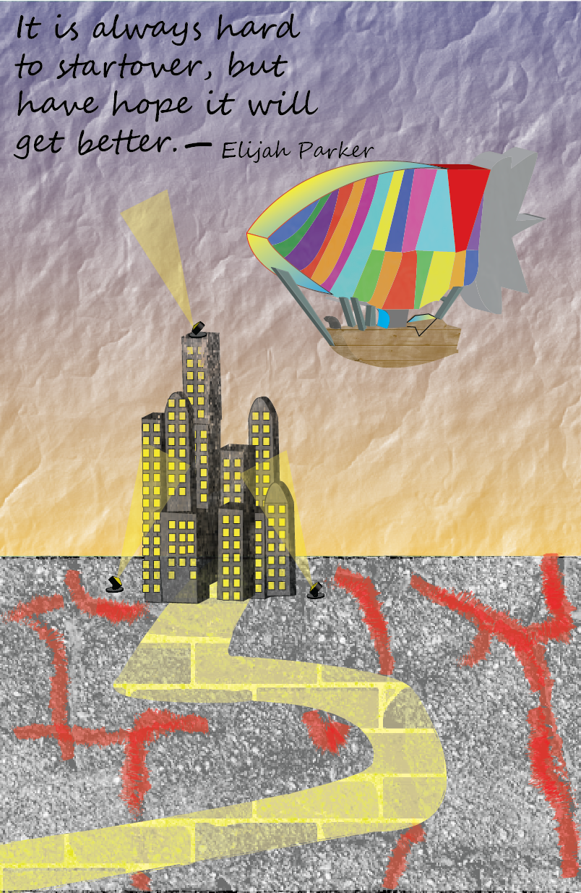

Vector Graphics
-

Interface
For my interface, I wanted to create my own type of house. So I decided to put it in space with multiple suns. Using some blurring I caused the odd radiance that you see.
-

Drawing Tools
I chose to put a litle bit of flare on the banana with just a little bit of gradient and also gave the sun a gradient.
-

Text
For my type assignment I wanted to do words that applied to me. I saw my friend create a weird symbol using his initials, so I did the same with mine on my second drwaing board.
-

Batman
My Batman, is when I chose to switch things up a bit. I wanted to do more of a firey look because fire is one of the things that I think describes me. I chose a lava texture that I found and think it works very good.
-

Poster
I wanted to put a theme to the alice in wonderland poster, and chose the end of the world. I have had lots of hard times in my life but I put that quote up at the top that i always say to myself. Recently I lost all my data on my computer and it was very devastating to me. Through some scavenging I have been, over time, able to scavange all of it and now it is finally restored.